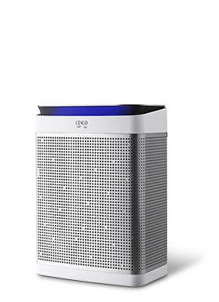
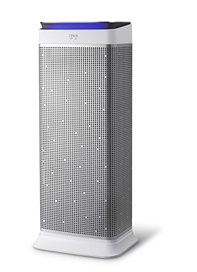
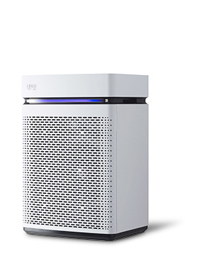
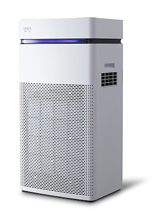
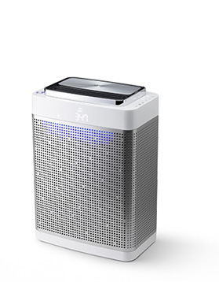
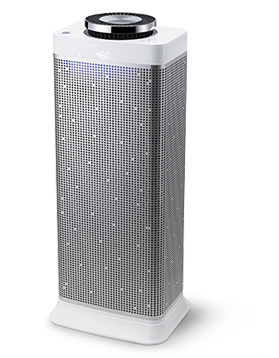

공기질관리 제품
air fresh product공기 청정기가 이렇게 까지?세스코는 묻고 또 물었습니다. 명백한 발암물질인 땅에서 뿜어져 나오는 라돈 방사능, 밀폐된 공간에서 아이들의 집중력을 저해하는 CO 2, VOC s 해마다 기승을 부리는 미세먼지와 극초미세먼지까지 우리는 싸워야합니다.
기필코! 결단코! 세스코!
지금까지 세상에 없었던 공기청정기 세스코 에어가 우리만의 6가지 약속을 드립니다.
특장점
-

- 사람에게 유해한 공기는
모두 찾아서 실시간으로 알려드리겠습니다. - 미세먼지만 위험한 게 아닙니다. 땅속에서 뿜어져 나오는 1급 발암물질 라돈방사능, 어린아이와 학생의 수면장애, 학습장애를 유발하는 CO 2, 가구나 벽지에서 뿜어져 나와 아토피와 기형아를 유발하는 VOC s 등 공기 중 보이지 않는 곳에 미세먼지보다 위험한 유해물질들이 더 많이 있습니다. 세스코 Air 공기청정기에는 공기중 위험 물질을 감지할 수 있는 6개의 초정밀센서가 탑재되어 있습니다.
- 사람에게 유해한 공기는
-
- 당신이 잠든 사이에도 세스코 에어는 생명을 위협하는 유해 공기와 싸우겠습니다.
- 세스코에어 공기청정기는 혼자 일하지 않습니다. 세스코 통합상황실과 실시간으로 연결되어 당신의 집 공기질 정보를 전송받아 진단 분석하고, 매우 위험한 공기질 상황이 반복 지속되면 3,000명의 세스코 공기질 전문가가 긴급출동까지 합니다.
-
- 실내 공기질과 실외 공기질을 한눈에 확인할 수 있게 해 24시간 최적의 환기타이밍을 알려드리겠습니다.
- 공기청정기가 나타내는 색상 변화를 통해 실내 공기질 뿐만 아니라 실외 공기질까지 직관적으로 확인하실 수 있습니다. 또한, 한눈에 확인할 수 있는 디스플레이에 세스코만의 통합지수가 표시되어, 공기청정기 작동이 필요한 순간은 언제인지, 혹시 환기가 필요한 것은 아닌지 쉽고 간편하게 공기질 상태를 확인할 수 있습니다.
-
- 모바일 IoT를 통해 어디서나 편리하게 공기청정기를 통제할 수 있도록 해드리겠습니다.
- 당신이 머무는 집안 곳곳은 물론 우리 아이가 혼자 있는 집에도 사랑하는 부모님이 계시는 고향댁에도 IoT 기능이 탑재된 세스코 공기청정기는 오염 수준에 따라 스스로 작동하고, 세스코 App을 통해 여러 대를 동시에 원격제어 할 수 있습니다. 우리집 공기청정기가 수집한 데이터와 세스코 통합상황실에서 수집된 데이터가 모아져 긴급상황 시에는 알람이 제공되고, 일간, 주간, 월간 공기질 패턴을 진단하여 당신의 생활에 꼭 맞는 맞춤형 솔루션을 드립니다.
-
- 정기방문 시 필터만 교체하고 끝나는 것이 아니라 세스코만의 차별화된 리포트를 제공해드리겠습니다.
- 해당 리포트는 수천 시간의 공기질 데이터를 분석한 자료로써, 고객님 자신도 알지 못했던 생활 패턴과 공기질을 망치는 잘못된 습관을 파악하는 귀중한 자료가 될 것입니다. 알레르기 환자가 있거나, 유해가스가 많이 발생하거나, 음식을 조리하는 일이 많은 경우 등 환경에 따라 맞춤형 필터를 제공하고, 최고수준의 헤파필터를 적용하여 최적의 공기질 상태를 만들겠습니다.
-
- 극초미세먼지를 99.99%제거하는 다중 필터 시스템
- 창문을 닫아도 들어오는 초미세먼지부터 강력한 냄새제거까지 깐깐하게 청정합니다. 강력한 듀얼팬을 장착한 세스코 공기청정기에 프레쉬팩을 장착하면 인공지능 시스템이 스스로 작동하여, 정화된 오부 공기를 강제 주입하고 오염된 실내공기는 몰아냅니다.
제품 및 가격
세스코 Air IoT 공기청정기 SE
극초미세먼지부터 라돈 방사능까지 안전한 공기질관리의 시작-

- IoT 라돈 룸케어 공기청정기 SE 세스코 Air 공기청정기 37.3m 2
- 라돈 방사능 센서, IoT CO 2센서, 냄새 센서, 온도 센서, 습도 센서
-

- IoT 라돈플러스 공기청정기 SE 세스코 Air 공기청정기 72.7m 2
- 파티클 센서, 라돈 방사능 센서, IoT CO 2센서, 냄새 센서, 온도 센서, 습도 센서
세스코 Air IoT 라돈 룸케어 공기청정기 SE
IoT 라돈 룸케어 공기청정기 SE (37.3m2)
제품설명라돈방사능 센서, 초미세먼지 센서 및 H14등급 필터 적용 공기청정기라돈방사능을 진단하고 초미세먼지, CO2, 냄새 센서 적용으로 실시간 공기질 분석정보를 제공합니다. 극초미세먼지까지 99.99%이상 제거하여 쾌적한 룸 컨디션을 제공합니다.
| 월 렌탈료 | 11,000원부터~ |
|---|
※고객센터로 상담 신청하시면 제품별로 고객님께 맞는 최저가를 제안해 드립니다.(월 렌탈료는 공기청정기 기종, 구매수량, 필터교체방식, 방문 주기, 제휴 프로모션,의무사용기간, 제휴카드 사용유무 등에 따라 가격이 달라질 수 있습니다.)
※계약기간은 5년이며 최초 설치일로부터 5년 이후에는 제품의 소유권이 고객님께 이전됩니다.
※37.3m2는 11평형에 해당됩니다.
세스코 Air IoT 라돈플러스 공기청정기 SE
IoT 라돈플러스 공기청정기 SE (72.7m2)
제품설명라돈방사능 센서, 극초미세먼지 초정밀센서 및 H14등급 필터 적용라돈방사능을 진단하고 극초미세먼지, CO2, 냄새 센서 적용으로 실시간 공기질분석정보를 제공합니다. 극초미세먼지 99.99% 이상 제거합니다.
| 월 렌탈료 | 22,000원부터~ |
|---|
※고객센터로 상담 신청하시면 제품별로 고객님께 맞는 최저가를 제안해 드립니다.(월 렌탈료는 공기청정기 기종, 구매수량, 필터교체방식, 방문 주기, 제휴 프로모션,의무사용기간, 제휴카드 사용유무 등에 따라 가격이 달라질 수 있습니다.)
※계약기간은 5년이며 최초 설치일로부터 5년 이후에는 제품의 소유권이 고객님께 이전됩니다.
※72.7m 2는 22평형에 해당됩니다.
세스코 Air 스마트핏 공기청정기
우리집 환경과 상황에 맞춰 더 스마트한 공기질 관리-

- 스마트핏 10 공기청정기 세스코 Air 공기청정기 34.7m 2
- 초미세먼지 센서, 냄새 센서
-

- 스마트핏 30 공기청정기 세스코 Air 공기청정기 100.9m 2
- 초미세먼지 센서, 냄새 센서, 온도 센서, 습도 센서
세스코 Air 스마트핏 10 공기청정기
스마트핏 10 공기청정기 (34.7m2)
제품설명초미세먼지 센서, 냄새 센서 및 H13등급 필터 적용 공기청정기사용자 환경에 따라 IoT 통신모뎀 장착하여 실시간 공기질 분석정보를 제공합니다.극초미세먼지까지 99.9% 이상 제거합합니다.
| 월 렌탈료 | 4,000원부터~ |
|---|
※고객센터로 상담 신청하시면 제품별로 고객님께 맞는 최저가를 제안해 드립니다.(월 렌탈료는 공기청정기 기종, 구매수량, 필터교체방식, 방문 주기, 제휴 프로모션,의무사용기간, 제휴카드 사용유무 등에 따라 가격이 달라질 수 있습니다.)
※계약기간은 5년이며 최초 설치일로부터 5년 이후에는 제품의 소유권이 고객님께 이전됩니다.
※34.7m 2는 10.5평형에 해당됩니다.
세스코 Air 스마트핏 30 공기청정기
스마트핏 30 공기청정기 (100.9m2)
제품설명초미세먼지 센서, 냄새 센서 및 H13등급 필터 적용 공기청정기사용자 환경에 따라 IoT 통신모뎀, CO2 센서, 라돈방사능 센서를 선택하여 실시간 공기질 분석정보를 제공합니다. 극초미세먼지까지 99.9% 이상 제거합니다.
| 월 렌탈료 | 24,000원부터~ |
|---|
※고객센터로 상담 신청하시면 제품별로 고객님께 맞는 최저가를 제안해 드립니다.(월 렌탈료는 공기청정기 기종, 구매수량, 필터교체방식, 방문 주기, 제휴 프로모션,의무사용기간, 제휴카드 사용유무 등에 따라 가격이 달라질 수 있습니다.)
※계약기간은 5년이며 최초 설치일로부터 5년 이후에는 제품의 소유권이 고객님께 이전됩니다.
※100.9m 2는 30.5평형에 해당됩니다.
세스코 Air IoT 공기청정기
실내외 공기질 상태를 확인하고, 분석하고, 관리하는 습관-

- IoT 룸케어 공기청정기 세스코 Air 공기청정기 33.1m 2
- IoT CO 2센서, 냄새 센서, 온도 센서, 습도 센서
-

- IoT 라돈 플러스 공기 청정기 세스코 Air 공기청정기 52.8m 2
- 파티클 센서, 라돈 방사능 센서, IoT CO 2센서, 냄새 센서, 온도 센서, 습도 센서
세스코 Air IoT 룸케어 공기청정기
IoT 룸케어 공기청정기 (33.1m2)
제품설명초미세먼지 센서 적용으로 실시간 초미세먼지 공기질 분석 정보를 제공하여 쾌적한 룸 컨디션을 제공합니다.
| 월 렌탈료 | 5,000원부터~ |
|---|
※고객센터로 상담 신청하시면 제품별로 고객님께 맞는 최저가를 제안해 드립니다.(월 렌탈료는 공기청정기 기종, 구매수량, 필터교체방식, 방문 주기, 제휴 프로모션,의무사용기간, 제휴카드 사용유무 등에 따라 가격이 달라질 수 있습니다.)
※계약기간은 5년이며 최초 설치일로부터 5년 이후에는 제품의 소유권이 고객님께 이전됩니다.
※33.1m 2는 10평형에 해당됩니다.
세스코 Air IoT 라돈 플러스 공기청정기
IoT 공기청정기 (52.8m2)
제품설명극초미세먼지 초정밀 센서 적용 + 세계 최초 라돈 방사능 센서 적용극초미세먼지로부터 지켜주고, 라돈 방사능까지 진단하는 맞춤형 솔루션으로 보이지 않는 공기를 안전하게 관리하세요!
| 월 렌탈료 | 20,000원부터~ |
|---|
※고객센터로 상담 신청하시면 제품별로 고객님께 맞는 최저가를 제안해 드립니다.(월 렌탈료는 공기청정기 기종, 구매수량, 필터교체방식, 방문 주기, 제휴 프로모션,의무사용기간, 제휴카드 사용유무 등에 따라 가격이 달라질 수 있습니다.)
※계약기간은 5년이며 최초 설치일로부터 5년 이후에는 제품의 소유권이 고객님께 이전됩니다.
※52.8m 2는 16평형에 해당됩니다.